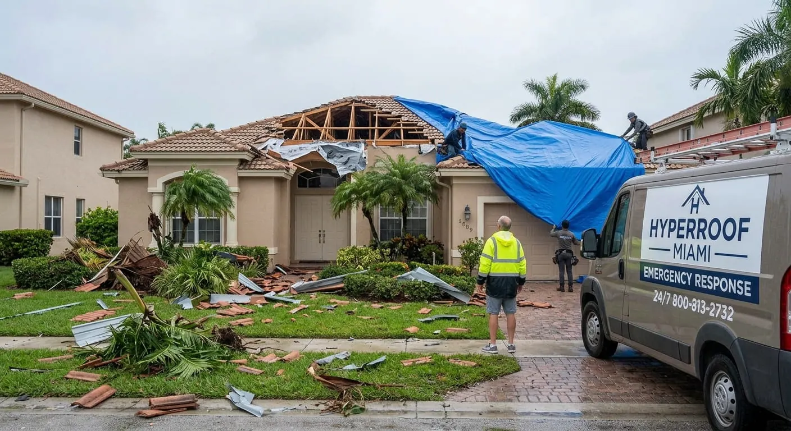
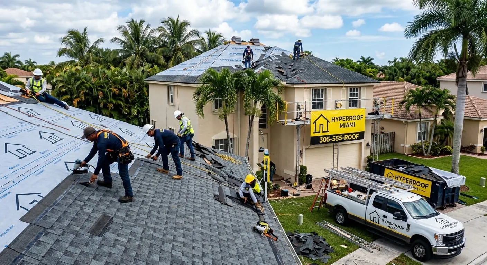
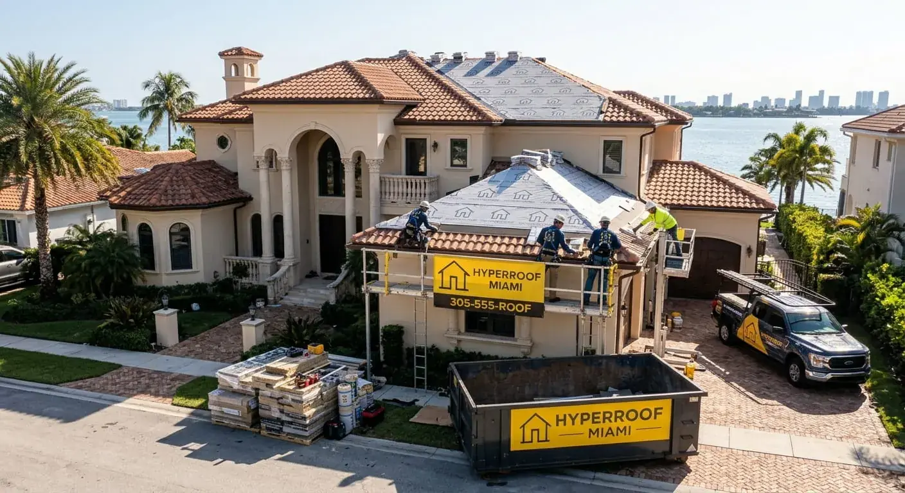
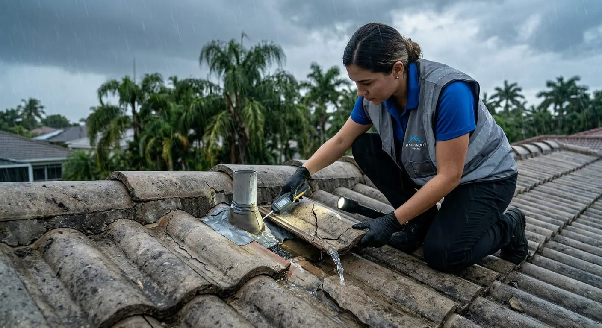
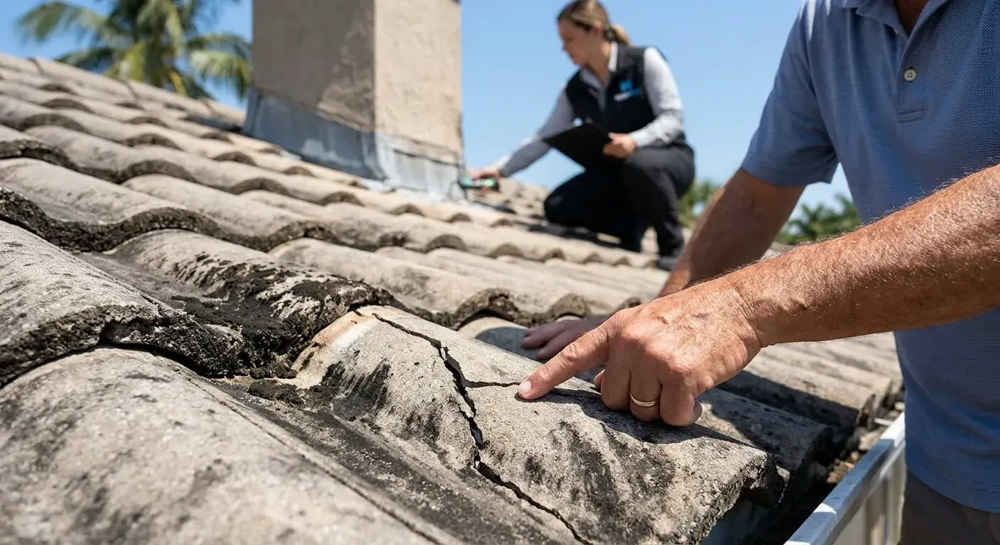
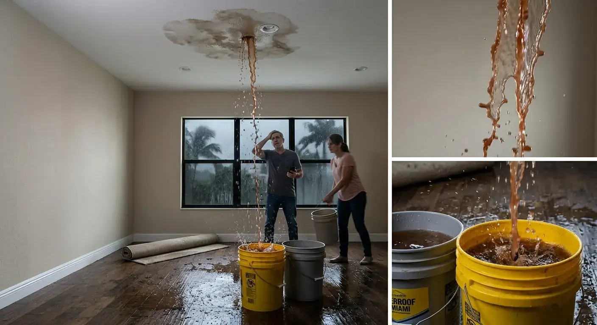

Roof Repair
Roof leak repair, damaged shingle or tile replacement, flashing repairs and storm-damage roof repairs for Miami-Dade homes and businesses.

Hyper Roof provides roof repair, roof replacement, roof inspections and storm-related roofing services for homes and commercial properties across Miami-Dade County. Use the quote form to discuss your roofing project.
A quote request is not a signed contract. Project scope, pricing, availability and timing are confirmed after review.
Use the short form to provide your name, phone, ZIP code, roof type and project details. We use the information you submit to respond to your request.
Roof leak repair, damaged shingle or tile replacement, flashing repairs and storm-damage roof repairs for Miami-Dade homes and businesses.
Roof replacement for aging or damaged roofing systems, with material options and project scope reviewed before installation.
New roof installation and re-roofing for Miami-Dade properties, with material selection and project scope discussed before work begins.
Emergency roof repair for active leaks, storm damage and exposed roof areas. Contact Hyper Roof to discuss the damage and confirm availability.
Commercial roof repair, replacement and inspections for offices, retail properties, warehouses and other business buildings across Miami-Dade.

Hyper Roof is a Miami-Dade roofing contractor that performs roof repair, roof replacement and roof inspection work for residential and commercial properties. We assess the roof's condition, explain the recommended work and materials, and carry out the agreed roofing project. Contact us to discuss your property and request an estimate.
Compare providers using information you can verify. Ask about licensing, insurance, materials, permits, scope, warranties and expected timing for your project.
Hyper Roof serves property owners across Miami-Dade County. Choose your community to learn about roof repair, replacement, inspections and local roof concerns, then contact our team to discuss your project.
A quote request is not a guarantee of service, contractor availability, pricing, financing, insurance coverage or project acceptance.
Useful information can make a roofing conversation easier. Gather the property ZIP code, approximate roof age, visible symptoms, photos taken safely from the ground and any previous inspection or repair information you have.




Learn which factors can change a replacement estimate, including materials, roof size, labor, permits and project scope.
Read the guide →
Learn how to document visible damage safely, reduce further exposure where appropriate and arrange an assessment.
Read the guide →
Understand why routine inspections and post-storm checks can help identify issues before they become larger problems.
Read the guide →Provide your name, phone number, property ZIP code, roof type if known and a short description of the work or problem. Photos or additional project details can be discussed through the appropriate follow-up channel.
No. A request is an inquiry only. It does not guarantee contractor availability, a quote, a price, financing, insurance coverage or acceptance of the project.
Ask for current licensing and insurance information, a written scope of work, material details, permit responsibilities, warranty terms and an expected timeline. Verify important information independently before hiring.
Prioritize safety, document visible damage from a safe location when possible, protect the property from further exposure where appropriate and arrange a professional assessment. Avoid unsafe roof access.
Common systems include asphalt shingles, concrete or clay tile, metal roofing and several flat-roof systems. The appropriate choice depends on the property, design, budget, applicable requirements and qualified professional advice.
Permit requirements vary by project and jurisdiction. Ask the contractor which permits apply and who is responsible for obtaining them before work begins.
Share a few project details and we will use the information to respond to your inquiry.
Request a Roofing QuoteNo purchase is required to submit a request. Submitting the form does not create a contractor agreement.